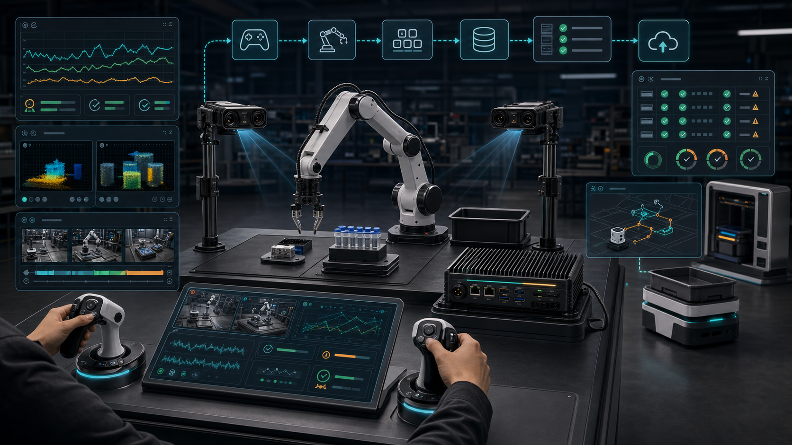

时间轴不可信
多相机、关节状态、夹爪、底盘、teleop input 和安全事件没有统一时钟，模型训练时无法判断动作原因。
Pitch 24 · Qualcomm-first Robot-Learning Episode Factory
一台可购买的遥操作和示教数据工位，把人类操作、相机、状态、动作、失败接管和质量门禁变成可训练、可审计、可交给 TrainRouter 的 LeRobot episode。
01 · Problem
录一段视频很容易；把视频、动作、状态、任务、失败、接管、reset 和隐私规则变成可训练 episode 很难。坏数据会污染 CloudTwin、TrainRouter、SkillCertKit 和 Qualcomm edge release。
多相机、关节状态、夹爪、底盘、teleop input 和安全事件没有统一时钟，模型训练时无法判断动作原因。
起点、目标、变化维度和成功标准没有写入 session，换一个操作员就变成另一个数据分布。
接管、碰撞前停止、遮挡、动作抖动和人工修正常常被删掉，错过了最有价值的 HIL recovery 数据。
训练前没有 frame count、timestamp skew、metadata、action shape、privacy 和 trainability gate。
没有数据生产线，就没有机器人软件平台。
02 · Current Alternatives Fail
开源、硬件套件、数据集、fleet ops、日志工具和企业数据服务都重要；问题是客户仍然要自己拼接采集工位、QC、数据合约、训练路由、模型 release 和现场交付。
能记录，但没有任务语言、segment、标定、success/failure、operator、privacy 和 TrainRouter contract。
LeRobot 很适合作为 dataset 和训练出口；商业客户还需要固定工位、操作员流程、质量门禁和售后支持。
它们让示教更高效，但客户仍要自己解决数据 schema、QC、云训练和 Qualcomm edge deployment evidence。
公开数据证明方向正确，但不能替代公司自己的客户任务、硬件 profile、场景分布和合规边界。
Formant、Viam、Foxglove、Rerun 强在远控、日志和可视化；TeleopStudio 专注训练入口的质量控制。
Scale、Labelbox Terra、Encord 说明 physical AI data 有预算，但初创、实验室和 OEM 需要先拥有自己的采集能力。
03 · Solution
它不是第 N 个遥控器，而是 `Operator Station + Capture Cell + Qualcomm Edge Recorder + Quality Gates + LeRobot Adapter + TrainRouter Handoff`。
定义任务、成功标准、变化维度、reset 协议、目标样本量、数据地域和 Qualcomm target profile。
同步记录多相机、state/action、teleop input、时间戳、安全事件、本地缓存和 operator context。
拒绝遮挡、丢帧、metadata 缺失、动作跳变、过短 episode、隐私风险和 reset 漂移。
输出 LeRobotDataset、MCAP/ROS bag、dataset card、manifest、QA report 和训练 job contract。
进入 TrainRouter 训练，失败和接管片段回流为下一轮高价值示教样本。

04 · Why Now
LeRobot 标准化了开发者流程，ALOHA/DROID/Open-X 证明真实示教数据的价值，physical AI data 服务开始进入企业预算，Qualcomm edge 则让采集、质检、隐私和部署证据可以从机器人旁边开始。
TeleopStudio 不替代 LeRobot，而是把现场 session、operator workflow、质量门禁和 provenance 接到 LeRobotDataset v3。
Mobile ALOHA、DROID、Open X-Embodiment 让行业转向多场景、多机器人、可复用真实轨迹。
数据采集、标注、teleop、评测正在从论文工具走向企业服务，客户愿意为数据质量付费。
多相机、编码、低延迟预览、隐私过滤、质量检查和缓存天然适合 Qualcomm edge workload。
05 · Product
从桌面机械臂样品转移、扫码、pick-place、按钮/抽屉/门把手、实验室耗材搬运开始，像早期 marketplace 一样先手工把供给标准化。
06 · Product API/Evidence
每条 episode 都要能被机器检查、被训练系统消费、被客户审计、被 Qualcomm edge release 追溯。
`episode_id`、`task_id`、`operator_id`、`robot_profile`、`camera_profile`、`action_schema`、segments、quality 和 exports 绑定在一起。
`demo / autonomous / pre_intervention / intervention / recovery / failure / abort / success`，支持 HIL fine-tuning。
raw MCAP、episode manifest、QA report、dataset card、TrainRouter contract 和 Qualcomm edge capture profile。
| Artifact | Why it matters | Consumer |
|---|---|---|
| raw_recording.mcap | 保留原始 topic、camera info、TF、metadata、attachments 和 hash。 | Replay / audit |
| episode_manifest.parquet | 记录 step、segment、task、operator、robot、camera、success/failure。 | LeRobot / TrainRouter |
| qa_report.json | 量化丢帧、时钟偏移、动作抖动、遮挡、隐私和接管率。 | Data lead / customer |
| trainrouter_job_contract.yaml | 锁定 dataset hash、cloud lane、budget、eval suite 和 Qualcomm target。 | CloudTwin / TrainRouter |
07 · Market & Business Model
Beachhead 是已经有机器人、但缺数据生产线的团队：机器人初创、AI manipulation lab、Robot OEM、系统集成商、高校课程、数据工厂和城市创新中心。
软件订阅、recorder、dataset export、ROS 2/Python adapter 和基础 QA。
单臂/双臂、leader arm 或 handheld teleop、多相机、标定、QC tooling 和支持。
中文文档、本地硬件、边缘采集、LeRobot/TrainRouter 联动、培训和售后。
私有部署、多工位、操作员管理、质量统计、数据不出域和现场集成。
4-8 周试点目标：一个明确任务从 `50 条合格 episode` 做到可训练、可评测、可部署证据包。
08 · Competition & Moat
TeleopStudio 的差异是把数据质量、证据和 Qualcomm edge profile 放在遥操作入口，把“录了多少小时”改成“每小时产出多少可训练 episode”。
任务模板、reset protocol、variation plan、dataset card、QC rules、LeRobot/MCAP/TrainRouter adapters。
operator valid-yield、failure taxonomy、takeover taxonomy、数据 lineage 和 replay-eval history。
追踪任务、相机、硬件、operator pattern、数据质量和 policy 组合如何稳定部署到 Qualcomm edge target。
09 · Why Qualcomm
多相机采集、视频编码、低延迟预览、端侧缓存、隐私过滤和质量检查都是 Dragonwing / RB3 / QCS edge 的真实 workload。TeleopStudio 把 AI Hub、QNN 和 edge profile 从训练链路一开始就绑定进去。
验证 `3x1080p30` 连续 30 分钟的 FPS、drop frame、P95 timestamp skew、storage throughput 和 thermal behavior。
验证 blur/occlusion/privacy 模型的 latency、FPS/power overhead、upload reduction 和 false reject rate。
把 “LeRobot capture to Qualcomm edge deployment” 做成 Robotics Hub / 比赛展示资产。
10 · Demo & Ask
评委需要看到端到端证据：真实遥操作如何变成可训练 episode，坏数据如何被拒绝，接管如何变成高价值样本，最后如何交给 TrainRouter 和 Qualcomm edge release。
展示一个 bad episode：视频有了，但 action、reset、timestamp、success label 和 privacy gate 都不完整。
操作员完成样品转移；故意遮挡或丢帧，QC gate 拒绝 episode 并给出原因。
标注 `pre_intervention / intervention / recovery`，导出 LeRobotDataset、QA report、manifest 和 job contract。
请求 RB3/QCS 开发板、多相机采集建议、AI Hub/QNN review、profiler 额度和生态样例 review。
TeleopStudio 的一句话：把“我们录了一些示教”变成“客户拥有一台持续生产机器人技能数据的机器”。